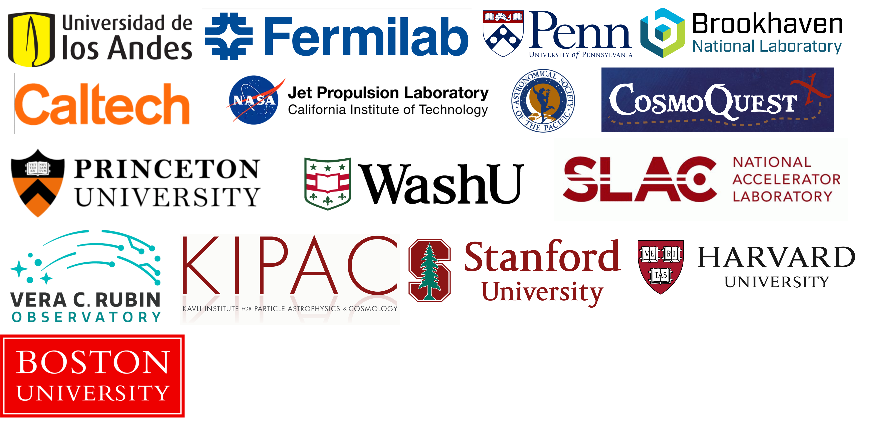

I grew up in Bogotá, nestled in the green Andes mountains of Colombia—at 2600 meters closer to the stars, in the region known for the legend of El Dorado, the city of gold. My fascination with the universe began early, and my path naturally led me to study physics and mathematics at Universidad de Los Andes in Bogotá. During my final year in college, I had the incredible opportunity to visit Fermilab in the United States to work on the characterization of the detectors of the Dark Energy Camera that would be used in the Dark Energy Survey, an experience that helped shape my future career.
After majoring in Physics at Uniandes, I moved to the University of Pennsylvania (Penn) in Philadelphia to pursue a doctoral degree in physics and astronomy. While at Penn, I was honored to receive the Zaccheus Daniel Foundation for Astronomical Science award. During my time there, I became involved in the Dark Energy Survey (DES) project, focusing on weak gravitational lensing and testing the detectors of the Dark Energy Camera used by DES at Fermilab, a Department of Energy national lab. My research in observational cosmology and weak lensing continued as a research associate at Brookhaven National Laboratory, where I became part of the Dark Energy Science Collaboration for the Legacy Survey of Space and Time (LSST). In 2016, I received the Fundación Alejandro Ángel Escobar National Prize in Natural and Exact Sciences for my work on characterizing systematic errors in weak gravitational lensing, one of the highest scientific recognitions in Colombia.
In 2015, I joined NASA’s Jet Propulsion Laboratory as a Caltech Postdoctoral Scholar, where I worked on understanding systematic errors in weak lensing from the infrared detectors for NASA’s Nancy Grace Roman Space Telescope. I have also worked as a Research Scientist at the Astronomical Society of the Pacific, where I contributed to the Cosmoquest project for community science. Following that, I joined Princeton University as an Associate Research Scholar in the Department of Astrophysical Sciences, working on the Algorithms and Pipelines team of the Vera C. Rubin Observatory.
Currently, I serve as Rubin Operations Scientist at SLAC National Accelerator Laboratory, Stanford University, and the Kavli Institute for Particle Astrophysics and Cosmology. I am also an Affiliate at Harvard University’s Department of Physics in Professor Chris Stubbs's group, and a Visiting Scientist at Washington University in St. Louis. Outside of my research, I am passionate about public engagement in science. I founded the Astronomy on Tap branches in St. Louis and Trenton (NJ), and I am the creator and co-host of the Spanish-language astronomy podcast Visión Cósmica. I co-organized the first-ever Tower Grove Park Astronomy Festival in St. Louis, as well as the first outreach event in Spanish at the Harvard College Observatory. As a NASA JPL Solar System Ambassador, I frequently participate in public outreach events in both Spanish and English.
When I'm not immersed in cosmology, I love spending time with my family—my spouse, kids, and our dog. I enjoy playing soccer, learning new languages, reading, running, traveling, doing science experiments with my kids, and occasionally playing video games. These activities keep me balanced and fuel my curiosity both at work and at home.
